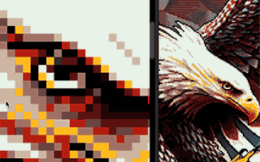
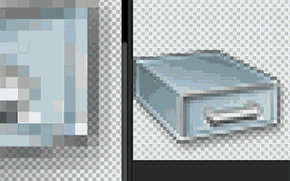
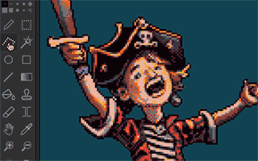
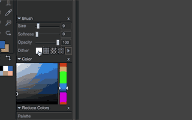
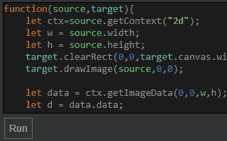
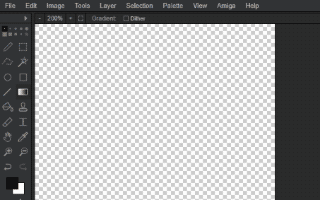
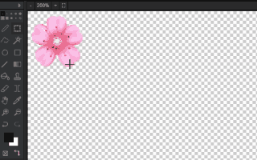
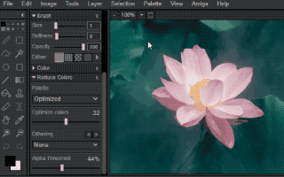
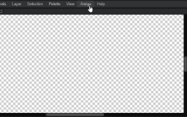
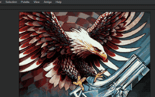

Preview your pixel before you actually put it. Very useful when hunting for the perfect pixel spot.
Instantly see how your image looks like as an icon or tile, so you can preview how it will look in the Amiga Workbench.
Edit the points of your lasso selection, so you can finetune your selection.
Create your own dither patterns, or use one of the predefined ones.
Create your own effects in JavaScript (examples included)
Mix 2 colors with a dither pattern.
(Soon to be animated)
Reduce your image colours to a specific palette, with various dithering options.
Direct editing of files on ADF disks (Amiga Disk format)
for that nostalgic itch, you can even directly open your image in the orignal Deluxe Paint, right in your browser.
